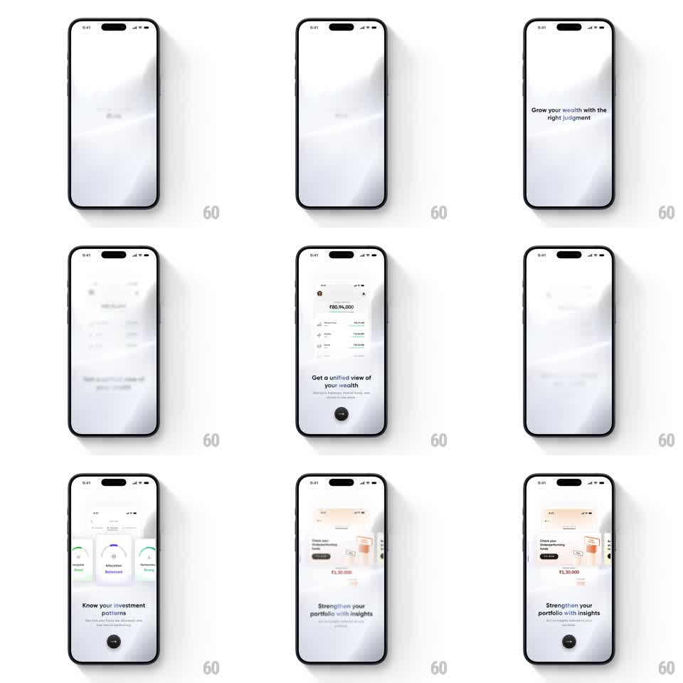

Media
Frame-by-frame

Rebuild this animation 1:1: Kuvera's onboarding pager - soft gradient pages where each benefit line arrives first, then a miniature product card rises from the bottom to prove it, paging through wealth view, investment patterns, and insights.

Rebuild this animation 1:1: Kuvera's onboarding pager - soft gradient pages where each benefit line arrives first, then a miniature product card rises from the bottom to prove it, paging through wealth view, investment patterns, and insights. ## Integration Integration: stack-agnostic spec - springs given as stiffness/damping, timed motions as duration + curve; map every value to your framework and animation library of choice. ## Scene Light grey pages with a soft diagonal gradient: "WELCOME TO KUVERA / Rishi" greeting, then pager pages - "Grow your wealth with the right judgment", "Get a unified view of your wealth" (portfolio card showing Rs 80,94,000), "Know your investment patterns" (three gauge cards: Discipline, Allocation, Performance), "Strengthen your portfolio with insights" (insights card) - with a round dark next-arrow button bottom-center. ## Motion spec Pattern: staged onboarding pager with rising product-proof cards. - Each page: the headline sets first (fade + rise 16px, 300ms), then the mini product card rises from the bottom edge (translateY 80 -> 0, spring ~280/16) with a soft shadow blooming under it. - Card content is alive: the portfolio number counts up (700ms), the gauge needles sweep to their values (500ms, ease-out, 80ms stagger across the three gauges). - Paging: swipe or next-arrow slides the card down and out (250ms) while the next page's headline enters (200ms) and its card rises; the gradient background hue shifts slightly per page. - The next button pulses subtly (scale 1 -> 1.06, 1.2s) when a page's animations complete. ## Calibration - The mini card is a faithful shrunken product screen - crisp text, real numbers - not an illustration. - One motion at a time: headline, then card, then in-card motion. Never overlapping. ## Reduced motion Pages crossfade (250ms); cards appear at rest with final values. ## Don't miss - The card's shadow arrives after the card lands, not during the rise. - Gauges sweep clockwise from the same zero baseline and hold - no needle wobble at rest.